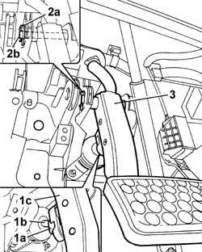

3330B24 brake pedal - r r for versions with manual gearbox with hydraulic selection
- Path
- Procedures > 33 BRAKING SYSTEM > 3330 HYDRAULIC BRAKING SYSTEM > 3330B PEDAL UNIT > 3330B24 brake pedal - r r for versions with manual gearbox with hydraulic selection
- Kind
- repair procedure (removal / refitting; the operation number is the code)
- Applies to
- engines: 1.2 8v; all production periods
- Interactive page
- https://sloeber94.github.io/elrnDB-fPnd/en/#/2752726
Applies to: engines: 1.2 8v; all production periods
 Removing
Removing
 Refitting
Refitting1. Working on the rear of the brake pedal, release the retaining tabs (1a), then release the brake servo pushrod (1b) and release the brake pedal (1c).
2. Remove the fixing clip (2a) and partially remove the brake pedal fixing pin (2b).
3. Remove the brake pedal.
Remove the brake servo pushrod retainer.
Recover the seat cup for the brake servo pushrod ball head.

Applies to: engines: 1.2 8v; all production periods
Refitting
RemovingFit the seat cup for the brake servo pushrod ball head in its seating.
Fit the brake servo pushrod retainer in its seating.
Fit the brake pedal in its seating.
Fit the brake pedal fixing pin and its fixing clip.
Fit the brake servo pushrod level with the retainer.
Press the brake pedal to engage the brake servo push rod with the retainer.